This icon set was crafted for a personal project: my family's Christmas Holiday Greeting Card 2018. Eschewing the usual photo-op, I opted to illustrate the six members of my family in flat design style, then arranged in a grid for the final printed product.
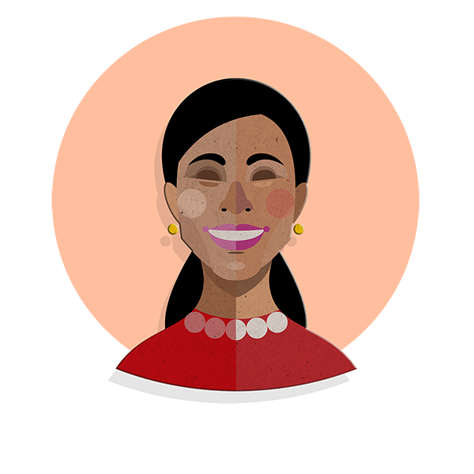
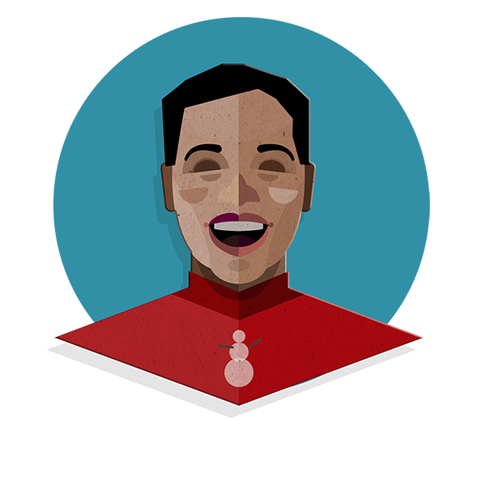
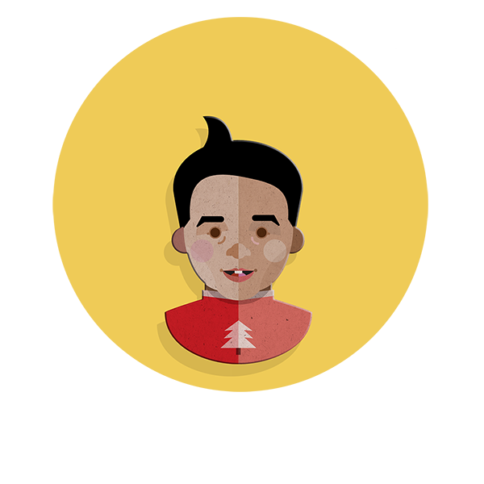
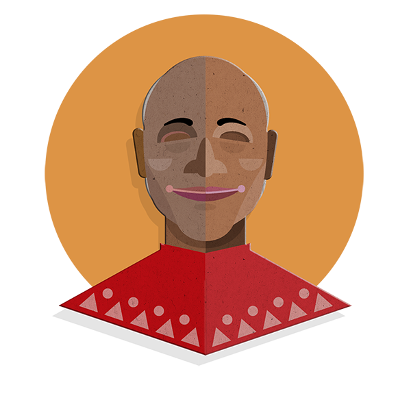
02Fall campaign
Fall for something new
This icon set was crafted to support NCTM's Fall marketing initiative of member acquisition and retention. Each icon was designed to complement copy developed for the "Fall for Something New" NCTM campaign web landing page.
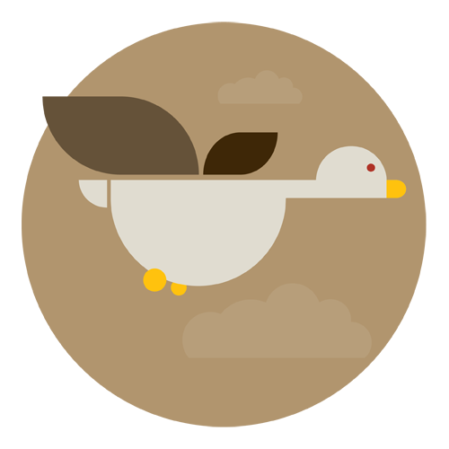
"Travel Plans? Head to an NCTM conference near you!""Something to smile about: purchase NCTM products using AmazonSmile."
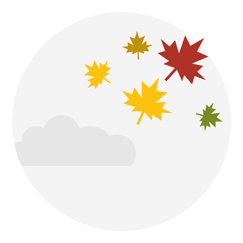
"Change is in the air: check out NCTM professional development services."
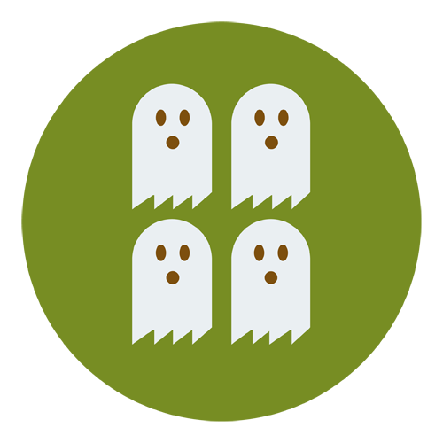
"Meet other members! Visit your community portal, MyNCTM!""NCTM offers great resources!"
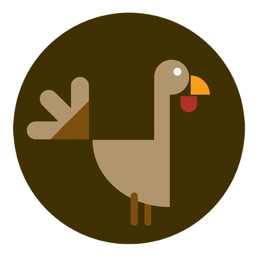
Main Fall Campaign motif. Slogan: "Fall for Something New"
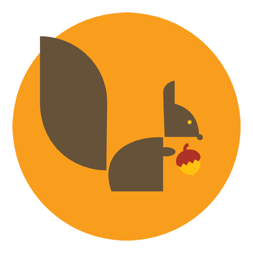
"Apply for grants - and get them! Read about past awardees inspirational stories.""Itʼs fall and the leaves are turning! The pages of our catalog are turning as well.""Vote for your next board of director leaders"
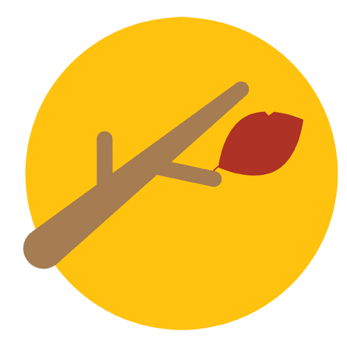
"Don't be the last to know about our exciting online programs!"
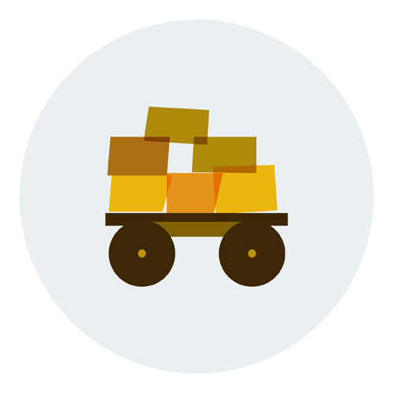
"Don't let these books and journals stack up like hay!"
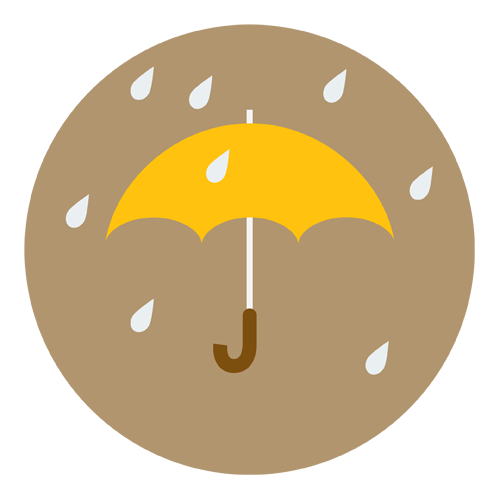
"Be ready for anything: stock up on NCTM math supplies..."
03I ♥ Math campaign
A February love letter to math
This icon set was crafted to support NCTM's February - I ♥ Math marketing initiative to retain and engage members. Each icon was designed to complement copy developed for the "I Love Math" campaign web landing page.
"Give and Show Your Love for Math"Highlights featured article addressing math concepts in Harry Potter Movies
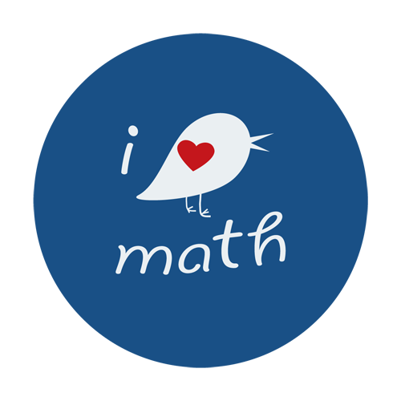
Main I Love Math motif for campaign."Discover Eye-Catching Reads""Find Journal Articles to Love""Latest Books and Journals""Stay On Target with NCTM Events""Join the Passionate Community on MyNCTM""Single Out the Good Stuff: Resources for Your Classroom"
04Grants and awards
A clearer path to a grant
These icons were created as a set of infographics used in NCTM's .org site, supporting the Mathematics Education Trust landing page copy regarding grant application process.
"Get inspired. Read the MET Blog to gain insights on the MET grant process..."
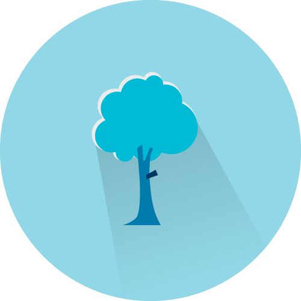
"Grow. Demonstrate the innovative classroom practices or share the educational research you were able to pursue as an award recipient.""Submit Proposals""Browse. Find the opportunities that will help you improve classroom practices..."